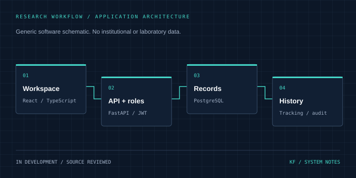

12 / FULL-STACK / CASE STUDY
NASENI Research LIMS
Connecting research records with traceable laboratory workflows.
In development Inspect source on GitHub ↗
Architecture
React workspace → FastAPI + JWT → PostgreSQL → Audit records
Problem & context
Research projects, experiments and sample histories need a consistent record and clear access boundaries.
Objectives
Explore a laboratory management workflow with authenticated access, sample tracking and audit records.
My role & project work
Project work covers a React/TypeScript workspace and FastAPI API with role checks, sample tracking and audit logging.
Technical implementation
The API defines projects, experiments, samples and observations. JWT tokens expire after 30 minutes; role dependencies restrict writes and administration. Compose defines the database, backend and frontend services.
Engineering decisions
Role checks run on API routes as well as in frontend navigation. Sample status changes and tracking events share a transaction, keeping the current state and history together.
Challenges & solutions
Sample updates can compete for the same record. The tracking route uses a database row lock and commits the status change, history event and audit entry together. Runtime concurrency behavior still needs testing.
Testing & verification
Reviewed the repository tree, backend/app/main.py, backend/app/auth.py, frontend/package.json, frontend/src/app/App.tsx and compose.yaml. The README is stale: it says no frontend, while the source tree includes one. Application tests and deployment were not run in this portfolio task.
Current status
Local development. No production deployment or institutional endorsement is claimed. This public summary uses only generic software architecture; no laboratory records, internal screenshots or institutional branding are reproduced.
Lessons & next steps
The code illustrates why authorization belongs on the server and why record history should be stored with the state change. A formal project retrospective is still to be supplied.